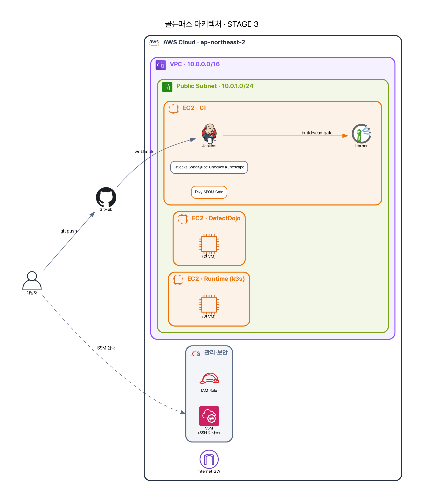

7화 · "이미지에 CVE가 6천 개?"¶
빌드까지 통과한 이미지를, A는 레지스트리에 올리기 전 마지막으로 한 번 더 스캔했다. 결과 화면을 보고 그는 의자에서 뒤로 넘어갈 뻔했다.
"6천 개?! 우리가 코드를 그렇게 많이 짜지도 않았는데, 취약점이 6천 개라고?"

파이프라인이 한 단계 더 자랐다. 이제 이미지를 빌드하고, SBOM(구성요소 목록)을 만들고, Trivy로 이미지 CVE를 본 뒤 레지스트리(Harbor)로 보낸다.
안에 뭐가 들었는지부터 — SBOM, 그다음 CVE¶
A가 짠 PHP 코드는 몇 천 줄이다. 그런데 컨테이너 이미지 안에는 그가 쓴 적 없는 것들이 가득하다 — 베이스 이미지의 OS 패키지, 그 패키지가 끌어온 라이브러리, 또 그게 의존하는 것들. 무엇이 들어있는지 모르면, 무엇이 취약한지도 모른다. 그래서 순서가 중요하다. 먼저 SBOM(Software Bill of Materials)으로 목록을 뽑고, 그 목록 위에서 CVE를 본다.
# SBOM — 표준 2포맷으로 '무엇이 들었나'를 기록
trivy image --no-progress --format spdx-json --output "${spdx_file}" "${image}"
trivy image --no-progress --format cyclonedx --output "${cdx_file}" "${image}"
# 취약점 스캔 — 그 목록 위에서 '무엇이 취약한가'
trivy image --exit-code 0 --no-progress --format json --output "${trivy_json}" "${image}"
파이프라인에서는 Generate SBOM → Trivy Scan Services(서비스 6개 각각) 순서로 돈다. 출력은 REPORT_DIR/sbom/<service>.spdx.json·.cdx.json와 REPORT_DIR/trivy/trivy-report-<service>.json. 그리고 게이트가 이 Trivy JSON을 읽어 GATE_MAX_CRITICAL=0·GATE_MAX_HIGH=3과 비교한다 — Build #3에서 6개 서비스 전부 BLOCK 됐다. CRITICAL 29개는 0개 임계값을 한참 넘으니까.
6천 개의 정체 — 숫자에 속지 않는다¶
A가 CVE들을 하나씩 까보다가, 충격적이지만 다행스러운 사실을 발견했다. 거의 다 자기 코드가 아니었다.
php:7.4-cli (EOL 베이스 이미지)
├─ curl CVE-2023-38545 (SOCKS5 힙 오버플로, CRITICAL)
├─ glibc CVE-2023-4911 (Looney Tunables 권한상승)
└─ … OS 패키지 CVE 수천 건
6화에서 눈에 밟혔던 그 FROM php:7.4-cli. 수명이 끝난(EOL) 베이스 이미지 하나가, 수천 개의 CVE를 만들어내고 있었다. 6천 개는 6천 개의 문제가 아니다. 단일 근본 원인 — 낡은 베이스 이미지 하나 — 가 수천 건으로 부풀려진 것이다.
이 깨달음이 7화의 핵심이다. "취약점 개수"에 압도되지 말고 근본 원인을 보라. 베이스 이미지를
php:8.x-slim이나 distroless로 바꾸면, 그 수천 개가 한 번에 사라진다. 6천이라는 숫자보다 "CRITICAL이 게이트를 BLOCK했는가"가 의미 있는 지표다. 개수는 공포를 주지만, 방향을 주지는 않는다.
그러니 6천 개를 전부 고치는 건 불가능하고 불필요하다. 도달 가능성(실제 실행 경로에 있는가)과 수정 가능 여부(fixed version이 있는가)로 트리아지한다. "영향 없음"이라고 근거를 달아 받아들이는 것(VEX)도 정당한 결론이다. 도구가 6천을 뱉어도, 사람이 내리는 결정은 "근본 원인 하나를 바꾼다"일 수 있다.
Trivy면 공급망 공격을 막나요 — 가장 중요한 경계¶
여기서 A는, 시니어가 던졌던 그 질문 앞에 정직하게 선다. "이거 돌리면 axios 같은 공급망 공격도 막나요?"
답은 아니다. 그리고 이걸 아는 게 이 도구를 극한까지 이해했다는 증거다. Trivy는 이미 알려진(advisory·CVE로 등재된) 취약점만 잡는다. 공개된 취약점 DB와 SBOM을 대조하는 방식이기 때문이다. 그런데 axios가 침해된 바로 그 순간엔, 아직 advisory가 없다. 악성 코드가 정상 버전 번호를 달고 배포된 그 시점에, Trivy의 DB에는 "이 버전이 악성"이라는 항목이 존재하지 않는다. 0-day 공급망 악성 패키지는, 빌드 시점의 Trivy가 못 잡는다.
그래서 SCA(Trivy)를 "공급망 1차 방어"로 과신하면 안 된다. 알려진 CVE에는 강력하지만, 알려지기 전에는 무력하다. 이 빈자리를 무엇으로 메우는가 — 그게 이 교본 후반부(SBOM 시간축 재평가, 런타임 탐지, egress 차단)의 주제다. Trivy는 1차 방어의 한 겹이지, 전부가 아니다.
A가 정리한 자리들¶
기술적으로 Trivy는 SBOM이라는 구성요소 목록 위에서 알려진 CVE를 매칭한다. 대부분은 베이스 이미지라는 단일 근본원인에서 나오고, 0-day는 구조적 사각이다. 규제로 옮기면, 이미지 취약점·패치 관리는 ISMS-P 2.10(취약점·패치 관리)에 닿고, 무엇을 도입했는지 추적하는 SBOM은 2.8(공급망)과 PCI-DSS Req 6.2(보안 패치)를 뒷받침한다. 정책의 영역에서, 게이트 임계값(CRITICAL 0)은 "이 위험 이상은 배포 불가"를 못박은 선이고, 더 나아가 승인된 베이스 이미지만 쓰게 하는 골든 이미지 정책으로 확장된다 — 근본 원인을 정책으로 끊는 것이다.
관리의 영역에서 SBOM의 진짜 가치가 드러난다. SBOM은 단순 스캔 입력이 아니라 자산 인벤토리다 — "우리가 무엇을, 언제 배포했는가"의 기록. 이 기록이 있어야 다음 장의 사후 재평가가 가능하다. 오늘 배포한 이미지에 어떤 구성요소가 들었는지 적어두지 않았다면, 내일 그 구성요소에 CVE가 터졌을 때 "우리가 영향받는가"를 답할 길이 없다. 미수정 CVE를 안고 가기로 한 결정은, 만료일과 함께 보안책임자가 승인하고 관리한다.
오늘 스캔은 게이트를 BLOCK했고, 베이스 이미지를 바꿔 통과시켰다 치자. 그런데 A의 머릿속엔 그 링크가 계속 맴돈다 — "axios 또 털렸대." 오늘 깨끗했던 이미지가, 내일 새 CVE가 공개되면 갑자기 위험해진다면? 이미 클러스터에 떠 있는 건 어떻게 되나? SBOM을 적어둔 게, 바로 이때를 위한 것이었다.
다음 → 8화 · "어제 통과한 게 오늘 위험해졌어요" — SBOM 시간축 재평가, 재빌드 없이